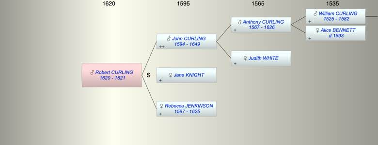

| [Index] |
| Robert CURLING (1620 - 1621) |
|  |
| b. 1620 at Aldgate |
| d. 1621 at Aldgate aged 1 |
| Parents: |
| John CURLING (1594 - 1649) |
| Rebecca JENKINSON (1597 - 1625) |
| Siblings (1): |
| Mary CURLING (1624 - ) |
| Events in Robert CURLING (1620 - 1621)'s life | |||||
| Date | Age | Event | Place | Notes | Src |
| 1620 | Robert CURLING was born | Aldgate | Note 1 | ||
| 1621 | 1 | Robert CURLING died | Aldgate | Note 2 | |
| Note 1: bap 3 Sep 1620 St Botolph Without, Aldgate ex Ancestry
to John curling weaver and Rebecca his wife |
| Note 2: buried 27 Aug 1621 at St Botolph Aldgate ex Ancesty |
| Created on a Mac™ using iFamily for Mac™ on 8 Oct 2023 |